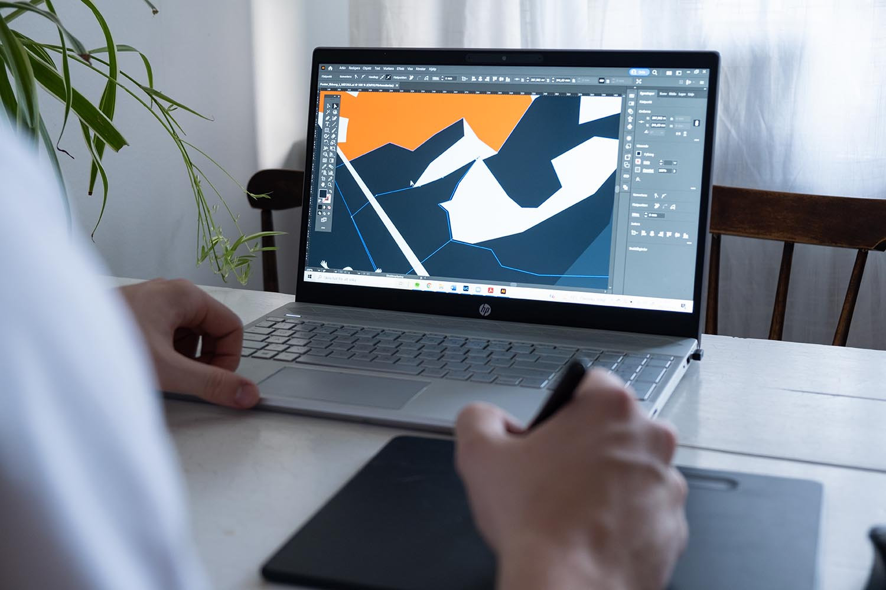

Photoshop
Adobe Photoshop anses av de allra flesta vara standardprogrammet när det kommer till foto- och bildredigering. Det används bland annat för att redigera och sätta ihop bilder, grafik och text i olika separata lager, skapa text och vektorgrafik samt för att skapa och ändra 3D-grafik. Programmet har således en mängd olika funktioner och verktyg som kan användas för en mängd olika uppgifter. Detta gör Photoshop till ett mycket kraftfullt program, men också ett program som kräver tid för att kunna hanteras effektivt.
Lightroom
Lightroom liknar på många sätt Photoshop, men har inte lika stor möjlighet att redigera bilder i detalj. Det innehåller en samling av verktyg för bildredigering och bildorganisation. Detta program används mycket av bland annat fotografer när enklare ändringar ska göras på ett stort antal bilder eller fotografier. Eftersom det inte har lika många verktyg och funktioner som Photoshop har, är Lightrooms användargränssnitt mycket enklare att använda.
XD
Adobe XD används för att skapa vektorbaserade prototyper av webbsidor och mobilappar. Detta för att kunna visualisera sina idéer och skapa layouts som är välfungerande och användarvänliga. Genom programmet kan man definiera och visa hur webbsidorna eller apparna ska fungera genom att länka varje sida till varandra. Exempelvis kan en skapad ruta länkas till en specifik sida. Väl inne i prototypläget kan testaren klicka på rutan och föras till den önskade sidan.
Illustrator
Illustrator är det program du ska använda om du ska göra illustrationer i vektorgrafik. Det är ett slags ritprogram som används mycket för att skapa logotyper, ikoner och andra illustrationer. Anledningen till att saker som logotyper görs i vektorgrafik, och därmed ofta i Illustrator, är att det går att förminska och förstora dessa utan någon förlust i kvalité. Om samma sak skulle göras i Photoshop, som jobbar med pixelgrafik, skulle kvalitén på illustrationen förändras vid storleksförändring.
InDesign
InDesign är standardprogrammet för många för digital layout och siddesign, främst för saker som är menade för tryck. InDesign används flitigt ute i arbetslivet när det kommer till att just designa och skapa exempelvis flyers, magasin, tidskrifter, dagstidningar, böcker och posters. Programmet kan också användas för att skapa interaktiva PDF:er.
Premiere Pro
Adobe Premiere Pro är ett videoredigeringsprogram. Det är baserat runt en tidslinje där användaren lägger in klipp, ljud och effekter längst tidslinjen för att skapa en hel video. Programmet används mycket inom film- och TV industrin, bland marknadsföring- och design studior samt av digitala content creators. Det lämpar sig därför båda till kortare klipp som är menade för YouTube men också för redigeringen av hela filmer. Det används mycket tillsammans med andra program i Creative Cloud, såsom After Effects, Photoshop och Adobe Stock.